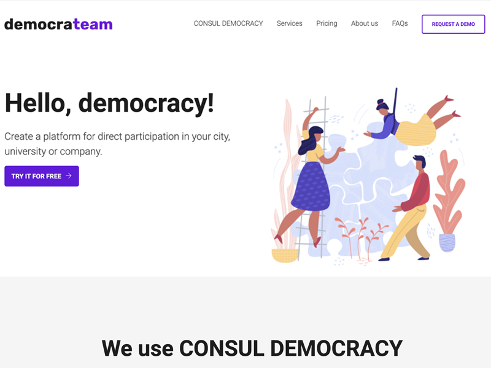
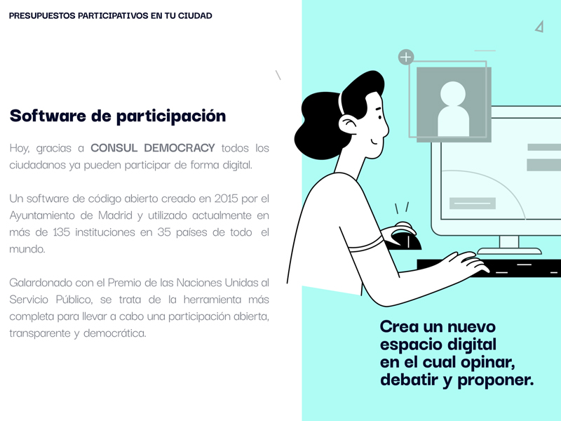
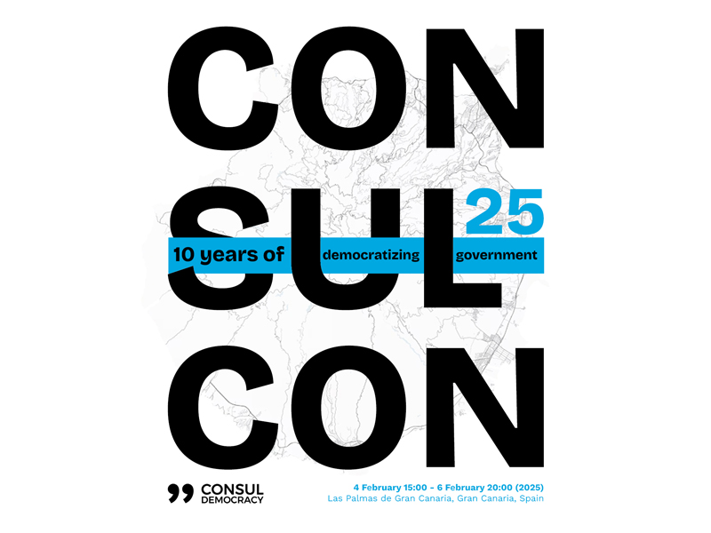

democrateam
At democrateam, we were responsible for the installation, maintenance and development of the open source software CONSUL Democracy, the citizen participation platform developed between 2015 and 2019 by the Madrid City Council. We were part of the core team responsible for its creation, evolution and continuous improvement.



Skills
- UX/UI Design
- Product Design
- Citizen participation platforms
- User experience in the public sector
- Design for open source software
- Accessibility and usability
Responsibilities
- Leading UX/UI design for citizen participation platforms based on CONSUL Democracy
- Designing accessible and understandable experiences for diverse users in institutional and administrative environments
Description
I was the founder and UX/UI designer of democrateam, a project specialized in citizen participation and open government solutions. My work focused on leading user experience design for complex institutional platforms, ensuring usability, accessibility and scalability in demanding public and regulatory contexts.
I worked directly on CONSUL Democracy, contributing to its design, functional evolution and continuous improvement, with a strong focus on enabling citizen participation and reducing usage barriers for non-technical users. The work combined strategic design, digital product thinking and close collaboration with technical teams and public administrations.